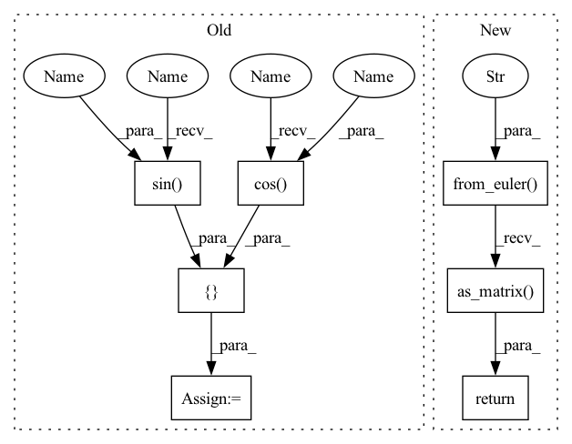

Pattern ID :20361

Before Change
def Rx(cls, q):
R = cls.eye(3)
[cq, sq] = [np.cos(q), np.sin(q)]
R[1, 1] = cq
R[1, 2] = -sq
R[2, 1] = sq
After Change
return np.array([x, y, z, w])
def Rx(cls, q):
return Rotation.from_euler("x", q).as_matrix()
def Ry(cls, q):
return Rotation.from_euler("y", q).as_matrix()
In pattern: SUPERPATTERN
Frequency: 3
Non-data size: 7
Instances
Fragment ID: 66031351
Project Name: dic-iit/adam
Commit Name: 13c77c425e9dcc34d2880660bf7a69dc68131929
Time: 2021-10-21
Author: gl.giuseppelerario@gmail.com
File Name: adam/numpy/spatial_math_numpy.py
M Class Name: SpatialMathNumpy
N Class Name: SpatialMathNumpy
M Method Name: Rx(2)
N Method Name: Rx(2)
M Parent Class: SpatialMathAbstract
N Parent Class: SpatialMathAbstract
M File Name: adam/numpy/spatial_math_numpy.py
N File Name: adam/numpy/spatial_math_numpy.py
M Start Line: 19
M End Line: 25
N Start Line: 23
N End Line: 23
'>
Before Change
def Ry(cls, q):
R = cls.eye(3)
[cq, sq] = [np.cos(q), np.sin(q)]
R[0, 0] = cq
R[0, 2] = sq
R[2, 0] = -sq
After Change
return Rotation.from_euler("x", q).as_matrix()
def Ry(cls, q):
return Rotation.from_euler("y", q).as_matrix()
def Rz(cls, q):
return Rotation.from_euler("z", q).as_matrix()
'>
Fragment ID: 66031350
Project Name: dic-iit/adam
Commit Name: 13c77c425e9dcc34d2880660bf7a69dc68131929
Time: 2021-10-21
Author: gl.giuseppelerario@gmail.com
File Name: adam/numpy/spatial_math_numpy.py
M Class Name: SpatialMathNumpy
N Class Name: SpatialMathNumpy
M Method Name: Ry(2)
N Method Name: Ry(2)
M Parent Class: SpatialMathAbstract
N Parent Class: SpatialMathAbstract
M File Name: adam/numpy/spatial_math_numpy.py
N File Name: adam/numpy/spatial_math_numpy.py
M Start Line: 28
M End Line: 34
N Start Line: 26
N End Line: 26
'>
Before Change
def Rz(cls, q):
R = cls.eye(3)
[cq, sq] = [np.cos(q), np.sin(q)]
R[0, 0] = cq
R[0, 1] = -sq
R[1, 0] = sq
After Change
return Rotation.from_euler("y", q).as_matrix()
def Rz(cls, q):
return Rotation.from_euler("z", q).as_matrix()
def H_revolute_joint(cls, xyz, rpy, axis, q):
T = cls.eye(4)
R = cls.R_from_RPY(rpy) @ cls.R_from_axis_angle(axis, q)
'>
Fragment ID: 66031349
Project Name: dic-iit/adam
Commit Name: 13c77c425e9dcc34d2880660bf7a69dc68131929
Time: 2021-10-21
Author: gl.giuseppelerario@gmail.com
File Name: adam/numpy/spatial_math_numpy.py
M Class Name: SpatialMathNumpy
N Class Name: SpatialMathNumpy
M Method Name: Rz(2)
N Method Name: Rz(2)
M Parent Class: SpatialMathAbstract
N Parent Class: SpatialMathAbstract
M File Name: adam/numpy/spatial_math_numpy.py
N File Name: adam/numpy/spatial_math_numpy.py
M Start Line: 37
M End Line: 43
N Start Line: 29
N End Line: 29